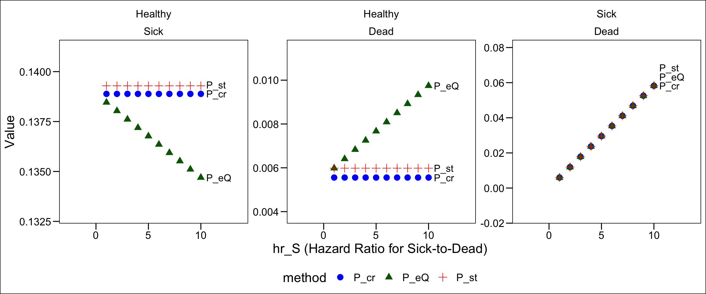
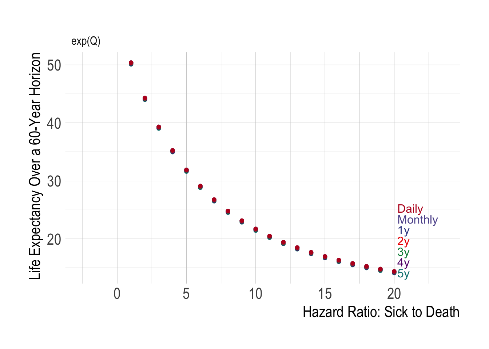

Embedding A Transition Probability Matrix for a Discrete Time Markov Model
Prologue
Define \(r_{HS}\) and \(r_{HD}\) as the hazard rate of two independent competing risks from a given (Healthy) health state (to Sick and Dead, respectively), and \(\Delta t\) the cycle length (e.g., \(1\)=1 year, \(1/12\)=1 month, etc.). We can also define a third rate \(r_{SD} = hr_{S}*r_{HD}\) for transitioning from sick to dead, i.e., the standard (healthy-to-dead) rate multiplied by the hazard ratio \(hr_{S}\).
The underlying Markov model takes the following form:
Code
library(Matrix)
library(tidyverse)
library(expm)
library(knitr)
library(gt)
library(directlabels)
library(glue)
library(ggsci)
library(ggthemes)
# Better accuracy that "life-table" aka trapezoidal method
alt_simp_coef <- function(i) c(17, 59, 43, 49, rep(48, i-8), 49, 43, 59, 17) / 48
alt_simp <- function(x,h) h*sum(alt_simp_coef(length(x)) * x)
r_HS <- 0.15
r_HD <- .006
hr_S <- 10
r_SD <- hr_S*r_HD
cycle <- 1
# 1-exp(-r_HS*cycle)
# 1-exp(-r_HD*cycle)
get_P <- function(r_HS,r_HD,r_SD,cycle) {
P_st <-
matrix(
c(exp(-r_HS*cycle) + exp(-r_HD*cycle) -1 , (1-exp(-r_HS*cycle)) , 1-exp(-r_HD*cycle),
0, exp(-r_SD*cycle), 1-exp(-r_SD*cycle),
0,0,1),
nrow = 3,
ncol = 3,
byrow=TRUE,
dimnames = list(c("Healthy","Sick","Dead"), c("Healthy","Sick","Dead"))
) %>%
data.frame() %>%
rownames_to_column(var = "from") %>%
mutate(name = "P_st")
P_eQ <- matrix(
c(-(r_HS*cycle+r_HD*cycle),r_HS*cycle,r_HD*cycle,
0,-r_SD*cycle,r_SD*cycle,
0,0,0),
nrow=3,
ncol=3,
byrow=TRUE,
dimnames = list(c("Healthy","Sick","Dead"), c("Healthy","Sick","Dead"))
) %>% expm() %>% as.matrix() %>%
data.frame() %>%
rownames_to_column(var = "from") %>%
mutate(name = "P_eQ")
P_cr <-
matrix(
c(exp(-(r_HS+r_HD)*cycle) , (r_HS/(r_HS+r_HD)) * (1-exp(-(r_HS+r_HD)*cycle)) ,(r_HD/(r_HS+r_HD)) * (1-exp(-(r_HS+r_HD)*cycle)) ,
0, exp(-r_SD*cycle), 1-exp(-r_SD*cycle),
0,0,1),
nrow = 3,
ncol = 3,
byrow=TRUE,
dimnames = list(c("Healthy","Sick","Dead"), c("Healthy","Sick","Dead"))
) %>%
data.frame() %>%
rownames_to_column(var = "from") %>% mutate(name = "P_cr")
out <- bind_rows( P_st, P_cr , P_eQ)
return(out)
}Code
check_sens <- function(r_HD,r_HS,r_SD,cycle) {
Q <- matrix(
c(-(r_HS*cycle+r_HD*cycle),r_HS*cycle,r_HD*cycle,
0,-r_SD*cycle,r_SD*cycle,
0,0,0),
nrow=3,
ncol=3,
byrow=TRUE,
dimnames = list(c("Healthy","Sick","Dead"), c("Healthy","Sick","Dead"))
)
# Q_ <- rbind(cbind(Q,c(r_HS*cycle,0,0)),c(0,0,0,0))
# Q_ <- rbind(cbind(Q_,c(r_HD*cycle,0,0,0)),c(0,0,0,0,0))
# dimnames(Q_) = list(c("Healthy","Sick","Dead","accS","accHD"),
# c("Healthy","Sick","Dead","accS","accHD"))
Q_ <- Q
P <- Q_ %>% expm() %>% as.matrix()
res <- get_P(r_HS=r_HS,r_HD=r_HD,r_SD=r_SD,cycle=cycle)
P_cr <- res %>% filter(name=="P_cr") %>% select(from,Healthy,Sick,Dead) %>%
data.frame() %>%
column_to_rownames(var = "from") %>%
as.matrix()
P_st <- res %>% filter(name=="P_st") %>% select(from,Healthy,Sick,Dead) %>%
data.frame() %>%
column_to_rownames(var = "from") %>%
as.matrix()
le1 <-
0:(60/cycle) %>% map(~(c(1000,0,0) %*% (P[1:3,1:3] %^% (.x)))) %>%
map(~(.x %>% data.frame)) %>%
bind_rows() %>%
as.matrix() %>%
{.[,-3]} %>%
alt_simp(.,1) %>%
{. * cycle} %>% {./1000} %>%
data.frame() %>%
set_names("life_exp")
res1 <- 0:(60/cycle) %>% map_df(~(c(1000,0,0) %*% (P %^%.x) %>% data.frame())) %>%
mutate(cycle = 0:(60/cycle)) %>%
select(cycle, everything()) %>%
tibble() %>%
tail(n=1) %>%
bind_cols(le1) %>%
mutate(method = "P_eQ")
le2 <-
0:(60/cycle) %>% map(~(c(1000,0,0) %*% (P_cr[1:3,1:3] %^% (.x)))) %>%
map(~(.x %>% data.frame)) %>%
bind_rows() %>%
as.matrix() %>%
{.[,-3]} %>%
alt_simp(.,1) %>%
{. * cycle} %>% {./1000} %>%
data.frame() %>%
set_names("life_exp")
res2 <- 0:(60/cycle) %>% map_df(~(c(1000,0,0) %*% (P_cr %^%.x) %>% data.frame())) %>%
mutate(cycle = 0:(60/cycle)) %>%
select(cycle, everything()) %>%
tibble() %>%
tail(n=1) %>%
bind_cols(le2) %>%
mutate(method = "P_cr")
le3 <-
0:(60/cycle) %>% map(~(c(1000,0,0) %*% (P_st[1:3,1:3] %^% (.x)))) %>%
map(~(.x %>% data.frame)) %>%
bind_rows() %>%
as.matrix() %>%
{.[,-3]} %>%
alt_simp(.,1) %>%
{. * cycle} %>% {./1000} %>%
data.frame() %>%
set_names("life_exp")
res3 <- 0:(60/cycle) %>% map_df(~(c(1000,0,0) %*% (P_st %^%.x) %>% data.frame())) %>%
mutate(cycle = 0:(60/cycle)) %>%
select(cycle, everything()) %>%
tibble() %>%
tail(n=1) %>%
bind_cols(le3) %>%
mutate(method = "P_st")
out <- res1 %>% bind_rows(res2) %>% bind_rows(res3)
return(out)
}Act 1: A World Without Death
It’s useful to begin with a completely unrealistic scenario: there is essentially no death. That is, individuals can either be Healthy or Sick, but they do not die. Furthermore, as shown in Figure 1, once someone becomes sick, they are chronically ill and can not transition back to death.
Let’s set the model parameters as follows. Essentially what we’re doing is setting the death rate(r_HD) to an extraordinarily small number (0.00000001)
| param | value |
|---|---|
| r_HS | 0.15 |
| r_HD | 10^{-8} |
| hr_S | 10 |
| r_SD | 10^{-7} |
It is common to use the following formula to convert rates to probabilities:
\[ p_{HS}= 1 - e^{-r_{HS}\Delta t} \]
Applying this to our example, the probability of transitioning from healthy to sick in a single one-year cycle is
\[ p_{HD} = 1 - e^{-0.15} = 0.139292 \]
After 2 years (1-year cycle), and assuming there is essentially no death at all in a starting cohort of 1,000 individuals, how many people would we expect to be in the sick state?
Code
c(1000,0) %*%
(matrix(c(exp(-.15),1-exp(-.15),0,1), nrow=2,ncol=2,byrow = TRUE,
dimnames=list(c("Healthy","Sick"),c("Healthy","Sick"))) %^% 2) %>%
data.frame() %>%
gt()| Healthy | Sick |
|---|---|
| 740.8182 | 259.1818 |
Let’s also calculate total life expectancy to make sure everything is running smoothly. We’ll also ignore any discounting in the life expectancy calculation.
Code
tr <-
0:60 %>% map(~({
c(1000,0) %*%
(matrix(c(exp(-.15),1-exp(-.15),0,1), nrow=2,ncol=2,byrow = TRUE,
dimnames=list(c("Healthy","Sick"),c("Healthy","Sick"))) %^% .x)
})) %>%
map(~(.x %>% data.frame())) %>%
bind_rows()
p <- matrix(c(1,1),nrow=2)
life_exp_nodeath <- data.frame(life_exp = as.matrix(tr) %>%
alt_simp(.,1) %>%
{. * cycle} %>% {./1000} ) %>%
{round(.,1)}
life_exp_nodeath %>%
gt() %>%
cols_label("life_exp"="Total Life Expectancy") %>%
tab_source_note("Note that we are ignoring discounting")| Total Life Expectancy |
|---|
| 60 |
| Note that we are ignoring discounting |
Not surprisingly, when there is no death or discounting, over a 60 year horizon life expectancy is 60.
Finally, let’s make one more tweak and switch from a yearly to a monthly time cycle. Again, we find identical answers for both the total number who become sick (after 2 years), and for life expectancy.
Code
c(1000,0) %*%
(matrix(c(exp(-.15 * (1/12)),1-exp(-.15 * (1/12)),0,1), nrow=2,ncol=2,byrow = TRUE,
dimnames=list(c("Healthy","Sick"),c("Healthy","Sick"))) %^% (2/(1/12))) %>%
data.frame() %>%
gt()| Healthy | Sick |
|---|---|
| 740.8182 | 259.1818 |
Code
tr <-
0:(60*12) %>% map(~({
c(1000,0) %*%
(matrix(c(exp(-.15/12),1-exp(-.15/12),0,1), nrow=2,ncol=2,byrow = TRUE,
dimnames=list(c("Healthy","Sick"),c("Healthy","Sick"))) %^% .x)
})) %>%
map(~(.x %>% data.frame())) %>%
bind_rows()
p <- matrix(c(1,1),nrow=2)
life_exp_nodeath <- data.frame(life_exp = as.matrix(tr) %>%
alt_simp(.,1) %>%
{. * (1/12)} %>% {./1000} ) %>%
{round(.,1)}
life_exp_nodeath %>%
gt() %>%
cols_label("life_exp"="Total Life Expectancy") %>%
tab_source_note("Note that we are ignoring discounting")| Total Life Expectancy |
|---|
| 60 |
| Note that we are ignoring discounting |
Act 2: Here Be (Competing Risks) Dragons
Code
res <- c(1000,0) %*%
(matrix(c(exp(-.15 * (1/12)),1-exp(-.15 * (1/12)),0,1), nrow=2,ncol=2,byrow = TRUE,
dimnames=list(c("Healthy","Sick"),c("Healthy","Sick"))) %^% (2/(1/12)))With the knowledge that in a world without death, approximately 259 people would become ill after 2 years, and would expect to live for 60 years on average, what happens when we introduce death as a competing risk?
Let’s now set the background mortality rate \(r_{HD}\) to 0.006. Let’s also assume that the hazard rate for death among sick people is 10 times the death rate of healthy people (i.e., \(r_{SD} = 10 \cdot r_{HD}\)).
Note that death is only a competing risk for the Healthy state, since if someone is sick, death is the only other state they can transition out to:
Standard Rate-to-Transition Conversion
Let’s first convert the supplied rates to probabilities using the same standard formulas, as above:
\[ p_{HS}= 1 - e^{-r_{HS}\cdot \Delta t} \]
\[ p_{HD} = 1 - e^{-r_{HD}\cdot \Delta t} \]
We can also define the probability of remaining healthy (i.e., transitioning to neither the sick or dead state) as:
\[ p_{HH} = 1 - p_{HS} - p_{HD}= e^{-r_{HS}\Delta t} + e^{-r_{HD}\Delta t} - 1 \]
And finally the probability of dying among sick people is defined as
\[ p_{SD} = 1 - e^{-hr_{HD}\cdot r_{HD}\cdot \Delta t} \]
Figure 6 shows the corresponding transition probability matrix:
Code
r_HD <- 0.006
r_SD <- 10*0.006
get_P(r_HS=r_HS,r_HD=r_HD,r_SD=r_SD,cycle=cycle) %>%
filter(name=="P_st") %>%
select(-name) %>%
#column_to_rownames("from") %>%
mutate_at(vars(-from), ~round(.,4)) %>%
gt() %>%
cols_label("from"="")| Healthy | Sick | Dead | |
|---|---|---|---|
| Healthy | 0.8547 | 0.1393 | 0.0060 |
| Sick | 0.0000 | 0.9418 | 0.0582 |
| Dead | 0.0000 | 0.0000 | 1.0000 |
Given this transition probability matrix, how many healthy, sick and dead individuals do we have in our cohort after a 60-year time horizon? Figure 7 summarizes state occupancy at the end of 60 years:
Code
res_60yst <-
check_sens(r_HD= r_HD, r_HS = r_HS, r_SD = r_SD, cycle=1) %>%
filter(method=="P_st")
res_60yst %>%
select(cycle,Healthy,Sick,Dead,life_exp) %>%
gt::gt() %>%
sub_missing(missing_text="-") %>%
fmt_number(columns = c(Healthy,Sick,Dead,life_exp),decimals=1) %>%
cols_label("life_exp" = "Life Expectancy")| cycle | Healthy | Sick | Dead | Life Expectancy |
|---|---|---|---|---|
| 60 | 0.1 | 43.6 | 956.3 | 22.1 |
As Figure 7 shows, after 60 years, 43.6 are recorded as being in the sick state and life expectancy has reduced to 22.1 years.
As above, let’s now repeat the same exercise using a daily cycle length:
Code
res_60yst_daily <-
check_sens(r_HD= r_HD, r_HS = r_HS, r_SD = r_SD,cycle=1/365) %>%
filter(method=="P_st")
res_60yst_daily %>%
select(cycle,Healthy,Sick,Dead,life_exp) %>%
gt::gt() %>%
sub_missing(missing_text="-") %>%
fmt_number(columns = c(Healthy,Sick,Dead,life_exp),decimals=1) %>%
cols_label("life_exp" = "Life Expectancy")| cycle | Healthy | Sick | Dead | Life Expectancy |
|---|---|---|---|---|
| 21900 | 0.1 | 42.6 | 957.4 | 21.7 |
By switching to a daily cycle we now have 42.6 recorded as being in the sick state after 60 years (=21,900 days) and life expectancy is 21.7 years.
Signs of Trouble
Let’s recap what we have found after introducing background mortality as a competing risk:
- Using a 1-year cycle length, life expectancy is 22.11 years.
- Using a daily cycle length, life expectancy is 21.73 years.
The only difference above is the cycle length used, yet we obtain a 0.38 year difference in life expectancy. What causes this difference?
Discretizing a Continuous Time Process
The answer boils down to the fact that with longer cycle lengths we “hide” some deaths that occur because a full healthy sick dead transition occurs within a single cycle.
When we use the standard rate-to-probability conversion formula (i.e., \(p_{HS}= 1 - e^{-r_{HS}\Delta t}\)) we obtain the marginal probability of transition. This marginal probability reflects the union of all possible transitions that start Healthy and then transition to and from the sick state in the cycle.
That is, \(p_{HS}= 1 - e^{-r_{HS}\Delta t}\) captures the probability of following scenarios occurring in a cycle:
- Individual transitions from healthy to sick.
- Individual transitions from healthy to sick to dead.
By including case 2 in the healthy sick transition probability, we effectively rule out the possibility of becoming sick and dying within the same cycle. This implicit assumption means that we are no longer modeling a continuous time process, since we effectively “hide” some (quick) deaths that occur within a cycle due to the disease:
In Figure 9, and using standard rate-to-probability conversion formulas, the recorded states of a healthy sick dead transition are recorded in blue; the “hidden” transition is shown in red.
Alternative Rate-to-Probability Conversion
Another set of formulas often used to account for competing risks are as follows:
\[ p_{HS}= \frac{r_{HS}}{r_{HS}+r_{HD}}\big ( 1 - e^{-(r_{HS}+r_{HD})\Delta t}\big ) \]
\[ p_{HD}= \frac{r_{HD}}{r_{HS}+r_{HD}}\big ( 1 - e^{-(r_{HS}+r_{HD})\Delta t}\big ) \]
\[ p_{HH} = e^{-(r_{HS}+r_{HD})\Delta t} \]
Let’s now use these formulas instead.
Figure 10 shows the corresponding transition probability matrix:
Code
r_HD <- 0.006
r_SD <- 10*0.006
get_P(r_HS=r_HS,r_HD=r_HD,r_SD=r_SD,cycle=cycle) %>%
filter(name=="P_cr") %>%
select(-name) %>%
#column_to_rownames("from") %>%
mutate_at(vars(-from), ~round(.,4)) %>%
gt() %>%
cols_label("from"="")| Healthy | Sick | Dead | |
|---|---|---|---|
| Healthy | 0.8556 | 0.1389 | 0.0056 |
| Sick | 0.0000 | 0.9418 | 0.0582 |
| Dead | 0.0000 | 0.0000 | 1.0000 |
Comparing Figure 6 and Figure 10, notice that a few things have changed. First, the probability of Healthy Sick transition declined. This would seem to be consistent with a world in which there are fewer alive sick individuals observed at the end of the cycle–which we would expect if acute illness results in a nontrivial number of quick deaths after illness onset in a cycle.
However, look at the Healthy Dead transition probability change; it went down, too. If we were recording more acute deaths from the disease, we should see more Healthy Dead transitions from individuals sojourning through the Sick state on their way to death in a single cycle.
What about state occupancy and life expectancy under different cycle lengths?
Code
res_60yst_cr <-
check_sens(r_HD= r_HD, r_HS = r_HS, r_SD = r_SD, cycle=1) %>%
filter(method=="P_cr") %>%
mutate(cycle = "1y") %>%
mutate(cycle_t = 60)
res_60yst_daily_cr <-
check_sens(r_HD= r_HD, r_HS = r_HS, r_SD = r_SD,cycle=1/365) %>%
filter(method=="P_cr") %>%
mutate(cycle_t = cycle) %>%
mutate(cycle = "Daily")
res_60yst_cr %>%
bind_rows(res_60yst_daily_cr) %>%
select(cycle,cycle_t,Healthy,Sick,Dead,life_exp) %>%
gt::gt() %>%
sub_missing(missing_text="-") %>%
fmt_number(columns = c(Healthy,Sick,Dead,life_exp),decimals=1) %>%
cols_label("life_exp" = "Life Expectancy")| cycle | cycle_t | Healthy | Sick | Dead | Life Expectancy |
|---|---|---|---|---|---|
| 1y | 60 | 0.1 | 43.9 | 956.0 | 22.2 |
| Daily | 21900 | 0.1 | 42.6 | 957.4 | 21.7 |
Code
diff_st_cr <-
res_60yst_cr %>%
bind_rows(res_60yst_daily_cr) %>% mutate(life_exp = life_exp-lead(life_exp)) %>% pull(life_exp) %>% na.omit() %>% as.vector()Again, we have a difference in life expectancy of 0.462 years. So switching to the alternative formulas has not fundamentally solved our problem.
Act III: Embedding a Transition Matrix and Recording Events
To properly account for compound transitions that can occur due to competing risks, we need to do the following:
- Embed the transition probability matrix by exponentiating the underlying transition rate matrix.
- Include non-Markovian accumulators in the transition probability matrix. This facilitates accurately calculating model outputs (e.g., total costs, QALYs, etc.).
1. Embed the Transition Probability Matrix
Our rate matrix Q is constructed by including the relevant transition rates in the off-diagonal cells. The diagonal of Q is the negative sum of off-diagonal elements in the same row:
| Healthy | Sick | Dead | |
|---|---|---|---|
| Healthy | -(\(r_{HS}\) + \(r_{HD}\)) | \(r_{HS}\) | \(r_{HD}\) |
| Sick | 0 | -(\(hr_{S} \cdot r_{HD}\)) | \(hr_{S} \cdot r_{HD}\) |
| Dead | 0 | 0 | 0 |
Here is the rate matrix for the Healthy-Sick-Dead model:
Code
params <-
list(r_HS = 0.15,
r_HD = 0.006,
hr_S = 10,
cycle = 1)
Q <-
with(params,{
matrix(
c(-(r_HS*cycle+r_HD*cycle),r_HS*cycle,r_HD*cycle,
0,-r_SD*cycle,r_SD*cycle,
0,0,0),
nrow=3,
ncol=3,
byrow=TRUE,
dimnames = list(c("Healthy","Sick","Dead"), c("Healthy","Sick","Dead"))
)
})
Q Healthy Sick Dead
Healthy -0.156 0.15 0.006
Sick 0.000 -0.06 0.060
Dead 0.000 0.00 0.000We next embed the transition probability matrix P by taking the matrix exponential of Q:
library(expm)
P <- expm(Q)
P Healthy Sick Dead
Healthy 0.8555592 0.1346958 0.009744961
Sick 0.0000000 0.9417645 0.058235466
Dead 0.0000000 0.0000000 1.000000000An alternative way of exponentiating a matrix is to perform a Taylor series expansion:
# Identity matrix with same dimensions and names as Q
Q_I <- diag(3)
dimnames(Q_I) = dimnames(Q)
# Note the %^% operator is in the expm package.
Q2 = Q %^% 2 # Q-squared
Q3 = Q %^% 3 # Q-cubed
Q4 = Q %^% 4 # etc.
Q_I + Q + (1/factorial(2))*Q2 + (1/factorial(3))*Q3 + (1/factorial(4))*Q4 Healthy Sick Dead
Healthy 0.8555599 0.1346947 0.009745373
Sick 0.0000000 0.9417645 0.058235460
Dead 0.0000000 0.0000000 1.000000000How does this approach (P_eQ) perform relative to the other transition probability matrices (P_st and P_cr)? Figure 15 shows how the transition probabilities vary by hazard rate.
We can now see we’ve achieved what we need: Healthy Dead transition probabilities that rise as the hazard rate of death from disease increases. Again, this occurs because as the likelihood of death after becoming ill increases, we increase the likelihood of a compound Healthy Sick Dead transition within a cycle. We need these to be recorded (accurately) as Healthy Dead transitions, rather than Healthy Sick transitions. Correspondingly, as the probability of a compound transition increases with an increasing hazard rate, the probability of a single Healthy Sick transition declines; we see this in Figure 15 as well.
Code
1:10 %>% map(~get_P(r_HS=.15,r_HD=.006,r_SD=.006*.x,cycle=1) %>% mutate(hr_S=.x)) %>%
bind_rows() %>%
gather(transition,value,-from,-name,-hr_S) %>%
spread(name,value) %>%
filter(P_cr!=1 & P_cr!=0) %>%
gather(method,value,-from,-hr_S,-transition) %>%
#filter(method!="P_eQ") %>%
tibble() %>%
mutate_at(vars(transition), function(x) factor(x,levels=c("Healthy","Sick","Dead"))) %>%
mutate_at(vars(from), function(x) factor(x,levels=c("Healthy","Sick","Dead"),
labels=c("Healthy","Sick","Dead"))) %>%
filter(from!=transition) %>%
ggplot(aes(x = hr_S, y = value)) +
geom_point(aes(colour=method, shape=method),size=3) +
scale_shape_manual(values = c(19,17,3)) +
facet_wrap(from~transition, scales="free") +
ggthemes::theme_base() +
scale_x_continuous(expand = expansion(mult=.5))+
scale_y_continuous(expand = expansion(mult=.5))+
theme(legend.position = "bottom") +
scale_color_manual(values= c("blue","darkgreen","red")) +
directlabels::geom_dl(aes(label = glue::glue(" {method}")), method="last.bumpup",hjust=1) +
labs(x = "hr_S (Hazard Ratio for Sick-to-Dead)",y = "Value")
We also see that regardless of the cycle length used, we always end up with the same calculated life expectancy:

We have thus “fixed” our problem of hidden disease-related deaths!
Why is this important?
The use of an embedded transition probability matrix is important for a number of reasons:
- The Markov model accurately reflects the underlying continuous time process.
- We get an accurate accounting of disease-related deaths.
- We can use whatever cycle length we need – this facilitates computationally intensive processes such as probabilistic sensitivity analyses, which may not be feasible with a short (e.g., daily) cycle length.
- We also avoid “state explosion” in the event our model has tunnel states. For example, if there is a one-year tunnel state for costs or utilities following disease onset, if we switched to a monthly or daily cycle we’d have to build in dozens or more health states into our Markov model. Beacuse we can stick with a one-year cycle, this makes use of tunnel states much more feasible.
The primary “cost” of using this approach over standard rate-to-probability conversion formulas is that we must be a bit more careful in structuring our transition probability matrix to include accumulators used to aggregate model outputs. We will cover this process in the section directly below.
2. Include Non-Markovian Accumulators to Record Event Transitions
We now have the correct transition probabilities to model the underlying continuous-time process, but how do we account for these compound transitions in our aggregation of model outputs?
Fundamentally, what we have now is a model that will correctly records the “true” number of deaths at the end of the cycle, because all the compound Healthy Sick Dead transitions are included in the Healthy Dead transition probability.
To track the total number of transitions to Sick, we must augment our transition probability matrix with non-Markovian accumulators. This accumulator shows up as a purple edge in our model diagram below:
Fortunately, accumulators are easy to build in. We simply add the relevant transition rate in a new column in the transition rate matrix Q, while leaving everything else the same.
Suppose we want to count up all the Healthy Sick transitions in the model. To do this we simply add the appropriate transition rate (\(r_{HS}\)) in as an accumulator column:
| Healthy | Sick | Dead | accHS | |
|---|---|---|---|---|
| Healthy | -(\(r_{HS}\) + \(r_{HD}\)) | \(r_{HS}\) | \(r_{HD}\) | \(r_{HS}\) |
| Sick | 0 | -(\(hr_{S} \cdot r_{HD}\)) | \(hr_{S} \cdot r_{HD}\) | 0 |
| Dead | 0 | 0 | 0 | 0 |
| accHS | 0 | 0 | 0 | 0 |
Note the following:
- An extra row of 0’s was added so that we balance the matrix, and ensure that we do not lose (or create!) anyone who becomes Sick.
- We did not update the diagonal elements (i.e., the negative sum of transition rates); these stay the same as before.
- If we wanted to add additional accumulators, we can just expand the matrix with more columns and rows as needed.
Here is the augmented transition rate matrix for our example:
Code
Q_ <- data.frame(Q)
Q_["Healthy","accHS"] <- params$r_HS
Q_["accHS","accHS"] <- 0
Q_[is.na(Q_)] <- 0
Q_ <- as.matrix(Q_)
Q_ Healthy Sick Dead accHS
Healthy -0.156 0.15 0.006 0.15
Sick 0.000 -0.06 0.060 0.00
Dead 0.000 0.00 0.000 0.00
accHS 0.000 0.00 0.000 0.00We next embed the transition probability matrix, as before:
Notice that the accumulator (
accHS) value is identical to the Healthy Sick transition probability we obtained using the alternative rate-to-probability conversion formula that accounted for competing risks (e.g., see Figure 10).P_ <- expm(Q_)
P_ Healthy Sick Dead accHS
Healthy 0.8555592 0.1346958 0.009744961 0.1388854
Sick 0.0000000 0.9417645 0.058235466 0.0000000
Dead 0.0000000 0.0000000 1.000000000 0.0000000
accHS 0.0000000 0.0000000 0.000000000 1.0000000Using the accumulator we can accurately count up how many individuals transition to the Sick state over our time horizon:
m_trace <-
0:(horizon/cycle) %>%
map_df(~(c(1000,0,0,0) %*% (P_%^%.x) %>% data.frame()))Code
m_trace[3,] %>%
round(.,2) %>%
rownames_to_column(var="cycle") %>%
select(-cycle) %>%
kable() %>%
kableExtra::kable_styling()| Healthy | Sick | Dead | accHS |
|---|---|---|---|
| 731.98 | 242.09 | 25.93 | 257.71 |
We see in Figure 17 that after 2 years, 257.7 people (out of 1,000) have become sick, which is slightly less than the 259 who became sick after 2 years in our world without death as a competing risk. Moreover, we see that state occupancy in the Sick category is lower, at 242.1. This lower value reflects the fact some people had a compound transition through Sick and ended up dead in the same cycle. The difference (15.6) amounts to the total number of individual deaths we “hid” in the model when we used the incorrect rate-to-probability conversion formulas.
This, of course, makes sense, since there are a small number of people who die before they could become ill once we add background mortality to the model